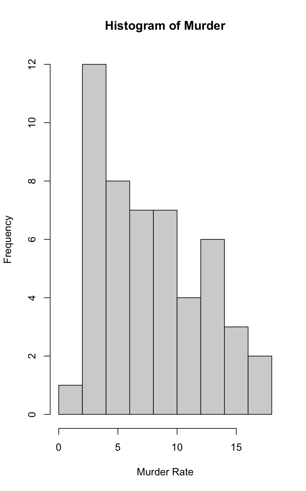
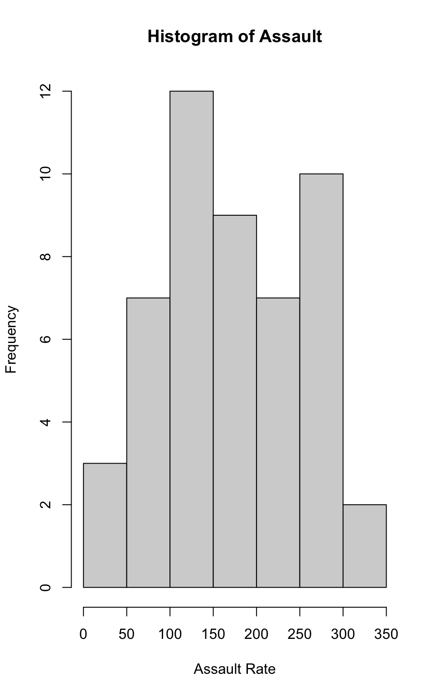
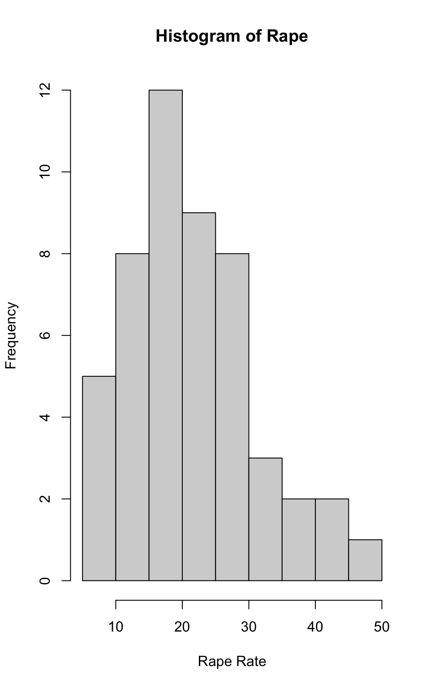
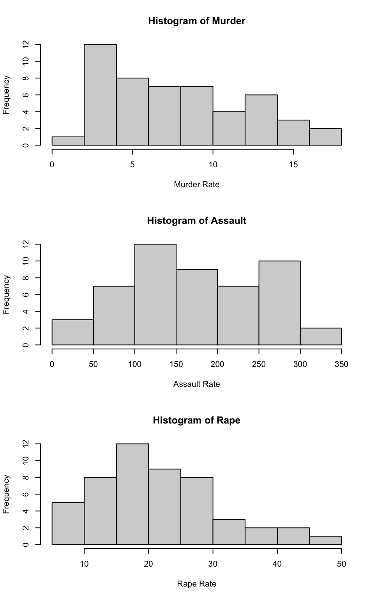
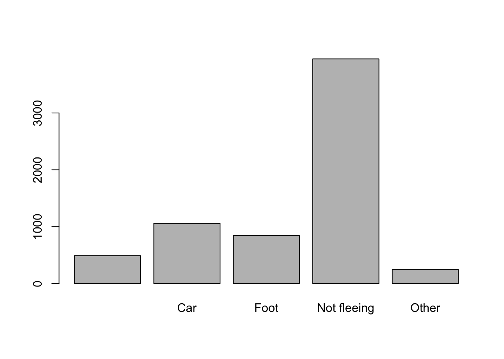

Assignments for Crim 250
This page will contain all the assignments you submit for the class.
This page will contain all the assignments you submit for the class.
Instructions for all assignments
I want you to submit your assignment as a PDF, so I can keep a record of what the code looked like that day. I also want you to include your answers on your personal GitHub website. This will be good practice for editing your website and it will help you produce something you can keep after the class is over.
Download the Assignment1.Rmd file from Canvas. You can use this as a template for writing your answers. It’s the same as what you can see on my website in the Assignments tab. Once we’re done with this I’ll edit the text on the website to include the solutions.
On RStudio, open a new R script in RStudio (File > New File > R Script). This is where you can test out your R code. You’ll write your R commands and draw plots here.
Once you have finalized your code, copy and paste your results into this template (Assignment 1.Rmd). For example, if you produced a plot as the solution to one of the problems, you can copy and paste the R code in R markdown by using the
``{r} ```command. Answer the questions in full sentences and Save.Produce a PDF file with your answers. To do this, knit to PDF (use Knit button at the top of RStudio), locate the PDF file in your docs folder (it’s in the same folder as the Rproj), and submit that on on Canvas in Assignment 1.
Build Website, go to GitHub desktop, commit and push. Now your solutions should be on your website as well.
Assignment 1
Collaborators: none.
This assignment is due on Canvas on Monday 9/20 before class, at 10:15 am. Include the name of anyone with whom you collaborated at the top of the assignment.
Problem 1
Install the datasets package on the console below using install.packages("datasets"). Now load the library.
# install.packages("datasets")
library(datasets)Load the USArrests dataset and rename it dat. Note that this dataset comes with R, in the package datasets, so there’s no need to load data from your computer. Why is it useful to rename the dataset?
USArrests## Murder Assault UrbanPop Rape
## Alabama 13.2 236 58 21.2
## Alaska 10.0 263 48 44.5
## Arizona 8.1 294 80 31.0
## Arkansas 8.8 190 50 19.5
## California 9.0 276 91 40.6
## Colorado 7.9 204 78 38.7
## Connecticut 3.3 110 77 11.1
## Delaware 5.9 238 72 15.8
## Florida 15.4 335 80 31.9
## Georgia 17.4 211 60 25.8
## Hawaii 5.3 46 83 20.2
## Idaho 2.6 120 54 14.2
## Illinois 10.4 249 83 24.0
## Indiana 7.2 113 65 21.0
## Iowa 2.2 56 57 11.3
## Kansas 6.0 115 66 18.0
## Kentucky 9.7 109 52 16.3
## Louisiana 15.4 249 66 22.2
## Maine 2.1 83 51 7.8
## Maryland 11.3 300 67 27.8
## Massachusetts 4.4 149 85 16.3
## Michigan 12.1 255 74 35.1
## Minnesota 2.7 72 66 14.9
## Mississippi 16.1 259 44 17.1
## Missouri 9.0 178 70 28.2
## Montana 6.0 109 53 16.4
## Nebraska 4.3 102 62 16.5
## Nevada 12.2 252 81 46.0
## New Hampshire 2.1 57 56 9.5
## New Jersey 7.4 159 89 18.8
## New Mexico 11.4 285 70 32.1
## New York 11.1 254 86 26.1
## North Carolina 13.0 337 45 16.1
## North Dakota 0.8 45 44 7.3
## Ohio 7.3 120 75 21.4
## Oklahoma 6.6 151 68 20.0
## Oregon 4.9 159 67 29.3
## Pennsylvania 6.3 106 72 14.9
## Rhode Island 3.4 174 87 8.3
## South Carolina 14.4 279 48 22.5
## South Dakota 3.8 86 45 12.8
## Tennessee 13.2 188 59 26.9
## Texas 12.7 201 80 25.5
## Utah 3.2 120 80 22.9
## Vermont 2.2 48 32 11.2
## Virginia 8.5 156 63 20.7
## Washington 4.0 145 73 26.2
## West Virginia 5.7 81 39 9.3
## Wisconsin 2.6 53 66 10.8
## Wyoming 6.8 161 60 15.6dat <- USArrestsAnswer: It is useful to rename the data set because it makes it easier to remember the name we give it to use in code commands later on in the assignment. It helps to separate the base R package dataset and turn it into our own dataset to use with the following work.
Problem 2
Use this command to make the state names into a new variable called State.
dat$state <- tolower(rownames(USArrests))This dataset has the state names as row names, so we just want to make them into a new variable. We also make them all lower case, because that will help us draw a map later - the map function requires the states to be lower case.
List the variables contained in the dataset USArrests.
list(dat)## [[1]]
## Murder Assault UrbanPop Rape state
## Alabama 13.2 236 58 21.2 alabama
## Alaska 10.0 263 48 44.5 alaska
## Arizona 8.1 294 80 31.0 arizona
## Arkansas 8.8 190 50 19.5 arkansas
## California 9.0 276 91 40.6 california
## Colorado 7.9 204 78 38.7 colorado
## Connecticut 3.3 110 77 11.1 connecticut
## Delaware 5.9 238 72 15.8 delaware
## Florida 15.4 335 80 31.9 florida
## Georgia 17.4 211 60 25.8 georgia
## Hawaii 5.3 46 83 20.2 hawaii
## Idaho 2.6 120 54 14.2 idaho
## Illinois 10.4 249 83 24.0 illinois
## Indiana 7.2 113 65 21.0 indiana
## Iowa 2.2 56 57 11.3 iowa
## Kansas 6.0 115 66 18.0 kansas
## Kentucky 9.7 109 52 16.3 kentucky
## Louisiana 15.4 249 66 22.2 louisiana
## Maine 2.1 83 51 7.8 maine
## Maryland 11.3 300 67 27.8 maryland
## Massachusetts 4.4 149 85 16.3 massachusetts
## Michigan 12.1 255 74 35.1 michigan
## Minnesota 2.7 72 66 14.9 minnesota
## Mississippi 16.1 259 44 17.1 mississippi
## Missouri 9.0 178 70 28.2 missouri
## Montana 6.0 109 53 16.4 montana
## Nebraska 4.3 102 62 16.5 nebraska
## Nevada 12.2 252 81 46.0 nevada
## New Hampshire 2.1 57 56 9.5 new hampshire
## New Jersey 7.4 159 89 18.8 new jersey
## New Mexico 11.4 285 70 32.1 new mexico
## New York 11.1 254 86 26.1 new york
## North Carolina 13.0 337 45 16.1 north carolina
## North Dakota 0.8 45 44 7.3 north dakota
## Ohio 7.3 120 75 21.4 ohio
## Oklahoma 6.6 151 68 20.0 oklahoma
## Oregon 4.9 159 67 29.3 oregon
## Pennsylvania 6.3 106 72 14.9 pennsylvania
## Rhode Island 3.4 174 87 8.3 rhode island
## South Carolina 14.4 279 48 22.5 south carolina
## South Dakota 3.8 86 45 12.8 south dakota
## Tennessee 13.2 188 59 26.9 tennessee
## Texas 12.7 201 80 25.5 texas
## Utah 3.2 120 80 22.9 utah
## Vermont 2.2 48 32 11.2 vermont
## Virginia 8.5 156 63 20.7 virginia
## Washington 4.0 145 73 26.2 washington
## West Virginia 5.7 81 39 9.3 west virginia
## Wisconsin 2.6 53 66 10.8 wisconsin
## Wyoming 6.8 161 60 15.6 wyominghead(dat)## Murder Assault UrbanPop Rape state
## Alabama 13.2 236 58 21.2 alabama
## Alaska 10.0 263 48 44.5 alaska
## Arizona 8.1 294 80 31.0 arizona
## Arkansas 8.8 190 50 19.5 arkansas
## California 9.0 276 91 40.6 california
## Colorado 7.9 204 78 38.7 coloradonames(dat)## [1] "Murder" "Assault" "UrbanPop" "Rape" "state"summary(dat)## Murder Assault UrbanPop Rape
## Min. : 0.800 Min. : 45.0 Min. :32.00 Min. : 7.30
## 1st Qu.: 4.075 1st Qu.:109.0 1st Qu.:54.50 1st Qu.:15.07
## Median : 7.250 Median :159.0 Median :66.00 Median :20.10
## Mean : 7.788 Mean :170.8 Mean :65.54 Mean :21.23
## 3rd Qu.:11.250 3rd Qu.:249.0 3rd Qu.:77.75 3rd Qu.:26.18
## Max. :17.400 Max. :337.0 Max. :91.00 Max. :46.00
## state
## Length:50
## Class :character
## Mode :character
##
##
## Problem 3
What type of variable (from the DVB chapter) is Murder?
Answer: Murder is a quantitative variable, because there are measured numerical values representing murder rates for each state.
What R Type of variable is it?
Answer: Murder is a character variable, as seen in the summary (dat) description in the code above.
Problem 4
What information is contained in this dataset, in general? What do the numbers mean?
Answer: This dataset contains the number of Murders, Assaults, and Rapes in each of the 50 states in the year 1973. It also shows us how many people lived in an urban area each state in that year, demonstrated by “UrbanPop.”
Problem 5
Draw a histogram of Murder with proper labels and title.
# histogram of Murder
hist(dat$Murder, main="Histogram of Murder", xlab="Murder Rate", ylab="Frequency")
Problem 6
Please summarize Murder quantitatively. What are its mean and median? What is the difference between mean and median? What is a quartile, and why do you think R gives you the 1st Qu. and 3rd Qu.?
#Summary of Murder
summary(dat$Murder)## Min. 1st Qu. Median Mean 3rd Qu. Max.
## 0.800 4.075 7.250 7.788 11.250 17.400Answer: The mean of Murder is 7.788, the median of Murder is 7.250. Mean represents the average number of murders between the 50 states in 1973, whereas mean is the middle number of murders if the quantities were lined up in numerical order. Quartiles are 4 approximately evenly sized groups with the data ordered from least to greatest. R most likely gives us Q1 and Q3 because the values between these two represent the middle 50% of the data, and provide more context for the spread of the mean.
Problem 7
Repeat the same steps you followed for Murder, for the variables Assault and Rape. Now plot all three histograms together. You can do this by using the command par(mfrow=c(3,1)) and then plotting each of the three.
#histogram of Assault
hist(dat$Assault, main="Histogram of Assault", xlab="Assault Rate", ylab="Frequency")
#Summary of Assault
summary(dat$Assault)## Min. 1st Qu. Median Mean 3rd Qu. Max.
## 45.0 109.0 159.0 170.8 249.0 337.0#Histogram of Rape
hist(dat$Rape, main="Histogram of Rape", xlab="Rape Rate", ylab="Frequency")
#Summary of Rape
summary(dat$Rape)## Min. 1st Qu. Median Mean 3rd Qu. Max.
## 7.30 15.07 20.10 21.23 26.18 46.00#Histogram of Murder, Assault, Rape
par(mfrow=c(3,1))
hist(dat$Murder, main="Histogram of Murder", xlab="Murder Rate", ylab="Frequency")
hist(dat$Assault, main="Histogram of Assault", xlab="Assault Rate", ylab="Frequency")
hist(dat$Rape, main="Histogram of Rape", xlab="Rape Rate", ylab="Frequency")
What does the command par do, in your own words (you can look this up by asking R ?par)?
Answer: the command par is used to set certain parameters within the data given to it. In this case, we used the par function to tell R that we wanted to plot 3 character vectors on histograms together in one plot.
What can you learn from plotting the histograms together?
Answer: Plotting the 3 histograms together allows us to easily visually compare the frequency of murders, assaults, and rapes to see which crime was most common among the 50 states in the year 1973.
Problem 8
In the console below (not in text), type install.packages("maps") and press Enter, and then type install.packages("ggplot2") and press Enter. This will install the packages so you can load the libraries.
Run this code:
library('maps')
library('ggplot2')
ggplot(dat, aes(map_id=state, fill=Murder)) +
geom_map(map=map_data("state")) +
expand_limits(x=map_data("state")$long, y=map_data("state")$lat)
What does this code do? Explain what each line is doing.
Answer: These lines of code are generating a dataframe that shows the map of the US, breaking up the information from the variable Murder into sections based on state. The lines also color-code the map based on the number of murders that occurred in that state.
\[\\[2in]\]
Assignment 2
Problem 1: Load data
Set your working directory to the folder where you downloaded the data. setwd(“/Users/johannadoherty/Documents/FALL 21/CRIM 250/Assign 2”)
Read the data dat <- read.csv(file = ‘dat.nsduh.small.1.csv’)
What are the dimensions of the dataset? names(dat) dim(dat)
Answer: The dimensions of the data are 7 variables/columns by 171 rows as seen above in the dimensions.
Problem 2: Variables
Describe the variables in the dataset. Answer: These are all numeric variables in R, although not all are quantitative variables in the data set. For example, irsex is a qualitative variable, with two options male or female, but each sex has been coded to a corresponding number, either 1 or 2, to make it useful as a numeric variable in R.
What is this dataset about? Who collected the data, what kind of sample is it, and what was the purpose of generating the data? Answer: The dataset is about drug use and health in the United States. The NSDUH (National Survey of Drug Use and Health) collected the data from participants ages 12 years and older in 2019. This is an example of a state based sample survey. The purpose of collecting the data from this sample is to hopefully be able to generalize about the drug use habits and health of the wider US population.
Problem 3: Age and gender
What is the age distribution of the sample like? Make sure you read the codebook to know what the variable values mean. hist(dat$age2) Answer: I used a histogram of the age2 variable (shown below) to demonstrate the distribution of age. Using the codebook to look at the meaning of the age2 variable, I can tell that the majority of respondents were between 35 and 49 years old (represented by the number 15 on this histogram). There was not a normal distribution of ages in this dataset, in fact the ages are skewed to the right, meaning there are more older participants than younger.
Do you think this age distribution representative of the US population? Why or why not? I do not think this is entirely representative of the distribution of ages in the US Population. While I do believe there are a lot of Americans falling into the 35-49 age group, I do not think there is such a drastically higher frequency of people of this age group than others. It is likely that this age group was just the most likely to fill out this kind of survey.
Is the sample balanced in terms of gender? If not, are there more females or males? hist(dat\(irsex) summary(dat\)irsex)
Answer: (in this above histogram, 1 represents male and 2 represents female). The dataset is almost balanced in terms of gender, as can be seen in the histogram. However, there are slightly more males in the data set than females. This can also be seen when looking at summary data of the gender variable (screenshot above), the mean is 1.468, meaning there are slightly more males than females in this data set. If it were perfectly balanced the mean should be exactly 1.5.
Use this code to draw a stacked bar plot to view the relationship between sex and age. What can you conclude from this plot? tab.agesex <- table(dat\(irsex, dat\)age2) barplot(tab.agesex, main = “Stacked barchart”, xlab = “Age category”, ylab = “Frequency”, legend.text = rownames(tab.agesex), beside = FALSE) # Stacked bars (default)
Answer: From this plot we can conclude that while most age group are roughly evenly split between males and females, some categories are overwhelmingly one or the other. For example, age group 8 (19 years old) seems to be entirely female, while age groups 6 and 7 (17 and 18 years old) seem to be entirely male. Overall, there are roughly even amounts of males and females for each age group, but there are some outliers.
Problem 4: Substance use
For which of the three substances included in the dataset (marijuana, alcohol, and cigarettes) do individuals tend to use the substance earlier? hist(dat\(mjage) hist(dat\)cigage) hist(dat$iralcage)
Answer: From these histograms, it appears that a higher frequency of respondents first tried marijuana between the ages of 10-15 than any other substance. For both alcohol and cigarettes, the tallest/highest frequency age blocks were older/further to the right than for marijuana.
Problem 5: Sexual attraction
What does the distribution of sexual attraction look like? Is this what you expected? table(dat$sexatract)
(For this variable; 1=heterosexual, 2=mostly attracted to opposite sex, 3=equally attracted to males and females, 4=mostly attracted to same sex, 5=only attracted to same sex, 6=not sure, 97=refused, 98=blank, 99=legitimate skip.)
Answer: It looks like the vast majority of respondents are heterosexual (only attracted to the opposite gender), which is pretty much expected given the demographics of the US population.
What is the distribution of sexual attraction by gender? tab.gendersexatract <- table(dat\(sexatract, dat\)irsex) barplot(tab.gendersexatract, main = “Stacked barchart”, xlab = “Gender Category”, ylab = “Frequency”, legend.text = rownames(tab.gendersexatract), beside = FALSE) # Stacked bars (default)
Answer: The distribution of sexual attraction by gender show that the sexual orientations of the females in this data set were more varied than those of the males. While the majority of both sexes still identified as straight, there were a higher frequency of women who identified as something other than straight as compared to the males.
Problem 6: English speaking
What does the distribution of English speaking look like in the sample? Is this what you might expect for a random sample of the US population? table(dat$speakengl)
Answer: The vast majority of respondents answered that they speak English very well, with only 21 selecting Well, and very few selecting anything less proficient than that. This does make sense to me, given that the national language of the US is English, but there are also a significant number of immigrants in the US that may not be as proficient in English. I would say that this is close to what I expected, but I may have expected to see more less proficient answers.
Are there more English speaker females or males? tab.sexspeakengl <- table(dat\(speakengl, dat\)irsex) barplot(tab.sexspeakengl, main = “Stacked barchart”, xlab = “Sex”, ylab = “Frequency”, legend.text = rownames(tab.sexspeakengl), beside = FALSE) # Stacked bars (default)
Answer: There are more English speaking males than females, but this is mainly because there are more males in the data set overall. There looks to be higher percentage of women that speak English “very well” compared to the men, but because there are a higher number of men overall, there are a higher number of men that speak English very well overall as well.
“Exam 1”
author: “Johanna Doherty”
date: “10/04/2021” output: html_document
Instructions
Create a folder in your computer (a good place would be under Crim 250, Exams).
Download the dataset from the Canvas website (fatal-police-shootings-data.csv) onto that folder, and save your Exam 1.Rmd file in the same folder.
Download the README.md file. This is the codebook.
Load the data into an R data frame.
setwd("/Users/johannadoherty/Documents/FALL 21/CRIM 250/EXAM 1")
dat<-read.csv("fatal-police-shootings-data.csv")Problem 1 (10 points)
- Describe the dataset. This is the source: https://github.com/washingtonpost/data-police-shootings . Write two sentences (max.) about this.
This data set, run by the Washington Post, contains every fatal shooting by U.S. police officers in the line of duty since January 2015.The data includes name of the victim, the date of the shooting, the manner of death, race, city, state and other relevant information about each shooting.
- How many observations are there in the data frame?
dim(dat)## [1] 6594 17There are 6594 observations for each of 17 variables in this data set..
- Look at the names of the variables in the data frame. Describe what “body_camera”, “flee”, and “armed” represent, according to the codebook. Again, only write one sentence (max) per variable.
names(dat)## [1] "id" "name"
## [3] "date" "manner_of_death"
## [5] "armed" "age"
## [7] "gender" "race"
## [9] "city" "state"
## [11] "signs_of_mental_illness" "threat_level"
## [13] "flee" "body_camera"
## [15] "longitude" "latitude"
## [17] "is_geocoding_exact"Body_Camera indicates whether or not the officer was wearing a body camera at the time of the shooting. Flee represents whether the victim was moving away from officers and whether they were moving by foot or by car or other. Armed represents whether the victim was armed at the time of the shooting, and if so describes what they were armed with.
- What are three weapons that you are surprised to find in the “armed” variable? Make a table of the values in “armed” to see the options.
table(dat$armed)##
## air conditioner
## 207 1
## air pistol Airsoft pistol
## 1 3
## ax barstool
## 24 1
## baseball bat baseball bat and bottle
## 20 1
## baseball bat and fireplace poker baseball bat and knife
## 1 1
## baton BB gun
## 6 15
## BB gun and vehicle bean-bag gun
## 1 1
## beer bottle binoculars
## 3 1
## blunt object bottle
## 5 1
## bow and arrow box cutter
## 1 13
## brick car, knife and mace
## 2 1
## carjack chain
## 1 3
## chain saw chainsaw
## 2 1
## chair claimed to be armed
## 4 1
## contractor's level cordless drill
## 1 1
## crossbow crowbar
## 9 5
## fireworks flagpole
## 1 1
## flashlight garden tool
## 2 2
## glass shard grenade
## 4 1
## gun gun and car
## 3798 12
## gun and knife gun and machete
## 22 3
## gun and sword gun and vehicle
## 1 17
## guns and explosives hammer
## 3 18
## hand torch hatchet
## 1 14
## hatchet and gun ice pick
## 2 1
## incendiary device knife
## 2 955
## knife and vehicle lawn mower blade
## 1 2
## machete machete and gun
## 51 1
## meat cleaver metal hand tool
## 6 2
## metal object metal pipe
## 5 16
## metal pole metal rake
## 4 1
## metal stick microphone
## 3 1
## motorcycle nail gun
## 1 1
## oar pellet gun
## 1 3
## pen pepper spray
## 1 2
## pick-axe piece of wood
## 4 7
## pipe pitchfork
## 7 2
## pole pole and knife
## 3 2
## railroad spikes rock
## 1 7
## samurai sword scissors
## 4 9
## screwdriver sharp object
## 16 14
## shovel spear
## 7 2
## stapler straight edge razor
## 1 5
## sword Taser
## 23 34
## tire iron toy weapon
## 4 226
## unarmed undetermined
## 421 188
## unknown weapon vehicle
## 82 213
## vehicle and gun vehicle and machete
## 8 1
## walking stick wasp spray
## 1 1
## wrench
## 1I was definitely surprised to see an air conditioner, a nail gun, and wasp spray used as weapons against the police.
Problem 2 (10 points)
- Describe the age distribution of the sample. Is this what you would expect to see?
hist(dat$age)
The distribution of age is skewed to the right, with the center focused around 30 years of age. This is pretty much what I would expect the age distribution to be, the most common age for crime to be committed is usually around 30 or under, so this may be a group that the police is most wary or suspicious of.
- To understand the center of the age distribution, would you use a mean or a median, and why? Find the one you picked.
summary(dat$age)## Min. 1st Qu. Median Mean 3rd Qu. Max. NA's
## 6.00 27.00 35.00 37.12 45.00 91.00 308Since the data are slightly skewed, I will use the median to understand the center of the distribution, because this will reduce the impact of outliers on the center. The median of these data is 35 years of age.
- Describe the gender distribution of the sample. Do you find this surprising?
table(dat$gender)##
## F M
## 3 293 6298There are way more male victims of fatal police shootings than females, as seen in the table above. This is not at all surprising to me, in America the stereotypical “criminal” is usually thought of as a young man, so it makes sense that the police might feel most threatened by people that fall into this category.
Problem 3 (10 points)
- How many police officers had a body camera, according to news reports? What proportion is this of all the incidents in the data? Are you surprised that it is so high or low?
table(dat$body_camera)##
## False True
## 5684 910910 of the recorded police officers were wearing a body camera, which is approximately 14% of the total recorded incidents. I am not surprised by how low this percentage is, I think that police officers have been generally resistant to the use of body cameras while in the field, and there are still many jurisdictions which do not enforce their use.
- In how many of the incidents was the victim fleeing? What proportion is this of the total number of incidents in the data? Is this what you would expect?
table(dat$flee)##
## Car Foot Not fleeing Other
## 491 1058 845 3952 248counts <- table(dat$flee)
barplot(counts)
It is important to note that there is one unlabeled category in the fleeing variable, that represents 491 incidents. Given that we can not tell what this represents, we will omit it from the number and percentage of those who fled/did not flee. 2151 of the victims were fleeing at the time of the shooting. This represents roughly 35% of the total incidents. I would actually expect more than this percentage of victims to have been fleeing the scene, I’m surprised that a majority of the victims recorded were not fleeing than those who were.
Problem 4 (10 points) - Answer only one of these (a or b).
- Describe the relationship between the variables “body camera” and “flee” using a stacked barplot. What can you conclude from this relationship?
Hint 1: The categories along the x-axis are the options for “flee”, each bar contains information about whether the police officer had a body camera (vertically), and the height along the y-axis shows the frequency of that category).
Hint 2: Also, if you are unsure about the syntax for barplot, run ?barplot in R and see some examples at the bottom of the documentation. This is usually a good way to look up the syntax of R code. You can also Google it.
tab.bodycamflee<-table(dat$body_camera, dat$flee)
barplot(tab.bodycamflee, main = "Stacked Barchart", xlab = "Fleeing", ylab = "Body Camera", legend.text = rownames(tab.bodycamflee),beside = FALSE) # Stacked bars (default)It is important to note again that there is one unlabeled category in the fleeing variable, that represents 491 incidents. Given that we can not tell what this represents, we will omit it from the analysis of the barchart. In the above stacked barchat, we can see that there seems to be a similar proportion of officers wearing body cameras for each category of fleeing/not fleeing. Although we can see that the Not fleeing category has a higher number of officers wearing body cameras, there are also a higher number of not fleeing incidents as compared to the other categories, so proportionally they look pretty similar across the board. From this distribution, it seems that there is no obvious relationship between body camera wearing and victim fleeing patterns, as there are very similar proportions of body cameras for each category of fleeing. It’s possible that a stacked barchart was not the best option to represent the relationship between these data, as we can not surmise much about the relationship from looking at this graph.
- Describe the relationship between age and race by using a boxplot. What can you conclude from this relationship?
Hint 1: The categories along the x-axis are the race categories and the height along the y-axis is age.
Hint 2: Also, if you are unsure about the syntax for boxplot, run ?boxplot in R and see some examples at the bottom of the documentation. This is usually a good way to look up the syntax of R code. You can also Google it.
Your answer here.
Extra credit (10 points)
- What does this code tell us?
mydates <- as.Date(dat$date)
head(mydates)
(mydates[length(mydates)] - mydates[1])This code shows us the dates when each of the recorded shootings took place, and by looking at the first few rows of data, we can see that there were 6 shootings in the first 4 days of 2015. The last line of code tells us the number of days between the first recorded shooting in the dataset and the most recent, which is 2458 days or 6.7 years. Given that the first dates are in January 2015 and we are now in October of 2021, this time difference makes sense.
- On Friday, a new report was published that was described as follows by The Guardian: “More than half of US police killings are mislabelled or not reported, study finds.” Without reading this article now (due to limited time), why do you think police killings might be mislabelled or underreported?
I think that police shootings could be mis-labelled or under-reported due to them being classified as less severe than they are. For example, if a victim is shot by the police, but does not die until they are in the hospital hours later, this might be classified as just a shooting and not necessarily a fatal shooting since the victim did not die on the scene. Although there should be no gray area, and any person who dies after being shot by the police should be recorded as a fatal police shooting, I can see the potential for mislabelling and underreporting with situations that occurr under murkier circumstances. .
- Regarding missing values in problem 4, do you see any? If so, do you think that’s all that’s missing from the data?
In the flee variable, there is an unlabeled category. Since we can not determine what these 491 incidents represent in terms of fleeing, we have to omit them from our analysis of the fleeing variable, which means we treat them as missing values. Given that this missing category exists, it would not surprise me to see that other variables have missing data as well. Given that “fleeing” could be seen as a matter of opinion or a subjective question in some challenging circumstances, it makes sense to me that there might be missing data in this variable. It seems possible that some of the other variables with “gray areas” or that are less clear cut could have missing data as well.
“Assignment 3”
“Johanna Doherty”
date: “Today’s date here: 10/26/2021” output: html_document
Collaborators: .
This assignment is due on Canvas on Wednesday 10/27/2021 before class, at 10:15 am. Include the name of anyone with whom you collaborated at the top of the assignment.
Submit your responses as either an HTML file or a PDF file on Canvas. Also, please upload it to your website.
Save the file (found on Canvas) crime_simple.txt to the same folder as this file (your Rmd file for Assignment 3).
Load the data.
setwd("/Users/johannadoherty/Documents/FALL 21/CRIM 250/Assign 3")
library(readr)
library(knitr)
dat.crime <- read_delim("crime_simple.txt", delim = "\t")## Rows: 47 Columns: 14## ── Column specification ────────────────────────────────────────────────────────
## Delimiter: "\t"
## dbl (14): R, Age, S, Ed, Ex0, Ex1, LF, M, N, NW, U1, U2, W, X##
## ℹ Use `spec()` to retrieve the full column specification for this data.
## ℹ Specify the column types or set `show_col_types = FALSE` to quiet this message.This is a dataset from a textbook by Brian S. Everitt about crime in the US in 1960. The data originate from the Uniform Crime Report of the FBI and other government sources. The data for 47 states of the USA are given.
Here is the codebook:
R: Crime rate: # of offenses reported to police per million population
Age: The number of males of age 14-24 per 1000 population
S: Indicator variable for Southern states (0 = No, 1 = Yes)
Ed: Mean of years of schooling x 10 for persons of age 25 or older
Ex0: 1960 per capita expenditure on police by state and local government
Ex1: 1959 per capita expenditure on police by state and local government
LF: Labor force participation rate per 1000 civilian urban males age 14-24
M: The number of males per 1000 females
N: State population size in hundred thousands
NW: The number of non-whites per 1000 population
U1: Unemployment rate of urban males per 1000 of age 14-24
U2: Unemployment rate of urban males per 1000 of age 35-39
W: Median value of transferable goods and assets or family income in tens of $
X: The number of families per 1000 earning below 1/2 the median income
We are interested in checking whether the reported crime rate (# of offenses reported to police per million population) and the average education (mean number of years of schooling for persons of age 25 or older) are related.
- How many observations are there in the dataset? To what does each observation correspond?
dim(dat.crime)## [1] 47 14There are 14 columns and 47 observations (or rows) in this data set. Each observation corresponds to a different state in the US.
- Draw a scatterplot of the two variables. Calculate the correlation between the two variables. Can you come up with an explanation for this relationship?
plot(dat.crime$Ed, dat.crime$R, main="Relationship between Education Level and Reported Crime",
xlab="Education Level in Yearsx10", ylab="Reported Crime per Million Population")cor(dat.crime$Ed, dat.crime$R)## [1] 0.3228349There is not an extremely defined relationship here, but it is slightly positively correlated with a correlation of .3228 as calculated above. A possible explanation for this relationship is that areas with people that have had more education may be more economically affluent and may be more likely to report crime that occurs. Since crime is more common in areas with lower socioeconomic statuses, people in these areas may be less likely to report given the commonality of these occurrences. So even if there are lower actual rates of crime in areas with higher education, there may be more reported crime.
- Regress reported crime rate (y) on average education (x) and call this linear model
crime.lmand write the summary of the regression by using this code, which makes it look a little nicer{r, eval=FALSE} kable(summary(crime.lm)$coef, digits = 2).
# Remember to remove eval=FALSE above!
crime.lm <- lm(formula = R ~ Ed, data = dat.crime)
summary(crime.lm)##
## Call:
## lm(formula = R ~ Ed, data = dat.crime)
##
## Residuals:
## Min 1Q Median 3Q Max
## -60.061 -27.125 -4.654 17.133 91.646
##
## Coefficients:
## Estimate Std. Error t value Pr(>|t|)
## (Intercept) -27.3967 51.8104 -0.529 0.5996
## Ed 1.1161 0.4878 2.288 0.0269 *
## ---
## Signif. codes: 0 '***' 0.001 '**' 0.01 '*' 0.05 '.' 0.1 ' ' 1
##
## Residual standard error: 37.01 on 45 degrees of freedom
## Multiple R-squared: 0.1042, Adjusted R-squared: 0.08432
## F-statistic: 5.236 on 1 and 45 DF, p-value: 0.02688- Are the four assumptions of linear regression satisfied? To answer this, draw the relevant plots. (Write a maximum of one sentence per assumption.)
plot(crime.lm, which=1)
1)Linearity: as seen in the scatterplot from question 2, the relationship between the two variables does not look straight, and also looking at the Residuals vs. Fitted plot, the data points are not evenly spread along the regression line, so there seems to be an issue of non-constant variance and the linearity assumption is not met. .
plot(dat.crime$Ed, crime.lm$residuals, ylim=c(-15,15), main="Residuals vs. x", xlab="x, Education", ylab="Residuals")
abline(h = 0, lty="dashed")2) Independence: As seen in the above residuals vs. x plot, there are no patterns meaning that the data are likely independent of each other.
plot(dat.crime$R, dat.crime$Ed)3) Homoscedasticity: In the y,x scatterplot above, the relationship between the data does not look linear, indicating a difference in the variability in y values of x, so this assumption is not met.
plot(crime.lm, which=2)
4)Normal Population: The Normal QQ plot does not look great both at the top and the bottom. It looks pretty normally distributed in the middle, but the top is pretty far off so we can not assume this condition is satisfied..
- Is the relationship between reported crime and average education statistically significant? Report the estimated coefficient of the slope, the standard error, and the p-value. What does it mean for the relationship to be statistically significant?
Given that the R-squared value of the linear regression is low (0.1042), the relationship between reported crime and average education is not statistically significant. The coefficient of the slope is 1.1161, and the p-value is 0.02668. If the relationship were statistically significant it would mean that changes in the dependent variable are correlated with changes in the independent variable.
- How are reported crime and average education related? In other words, for every unit increase in average education, how does reported crime rate change (per million) per state?
The slope in our model tells us that for every 1 year increase in the average length of education in a given state, the # of crimes reported to the police per million population for that state will increase by 1.1161. This is not a causal interpretation, but this is the predicted relationship between reported crime and average education.
- Can you conclude that if individuals were to receive more education, then crime will be reported more often? Why or why not?
There are two issues with making this conclusion based on this data. Firstly linear regression provides a prediction based on a correlation and should not be used to make causal statements. If anything, one could say that more education is related to more reporting of crime, but no causal statements should be made. Secondly, it is difficult to assume either of these statements are accurate when some of the assumptions were not met. If all four assumptions for linear regression had been satisfied then we would have more confidence in the predictions made using this regression. Since this is not the case, it is possible that a linear model is not the right fit for this relationship, making it hard to make even correlational judgments based on this regression.